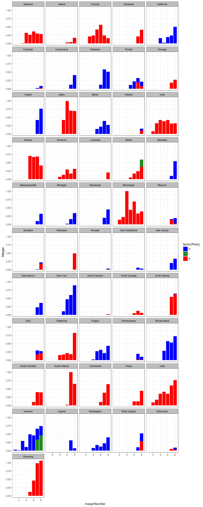
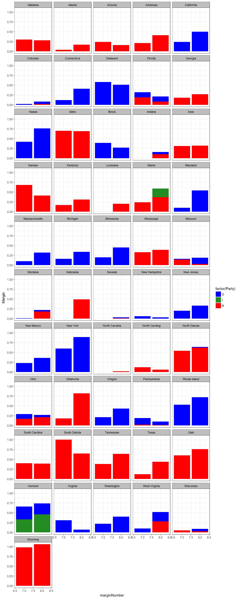
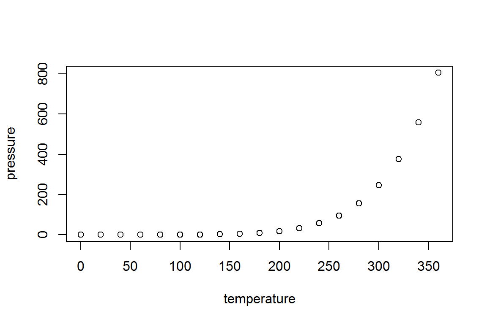

library(ggplot2)
library(dplyr)## Warning: package 'dplyr' was built under R version 3.4.1## Warning: Installed Rcpp (0.12.10) different from Rcpp used to build dplyr (0.12.11).
## Please reinstall dplyr to avoid random crashes or undefined behavior.##
## Attaching package: 'dplyr'## The following objects are masked from 'package:stats':
##
## filter, lag## The following objects are masked from 'package:base':
##
## intersect, setdiff, setequal, unionlibrary(tidyverse)## Loading tidyverse: tibble
## Loading tidyverse: tidyr
## Loading tidyverse: readr
## Loading tidyverse: purrr## Warning: package 'tibble' was built under R version 3.4.1## Conflicts with tidy packages ----------------------------------------------## filter(): dplyr, stats
## lag(): dplyr, statselection <- read.csv("C:/Users/Chris Iyer/Documents/election11.csv")
head(election)## Name State Party Year.Elected YrsInOffice
## 1 Leahy, Patrick Vermont D 1975 43
## 2 Hatch, Orrin Utah R 1977 41
## 3 Cochran, Thad Mississippi R 1978 40
## 4 Grassley, Chuck Iowa R 1981 37
## 5 McConnell, Mitch Kentucky R 1985 33
## 6 Shelby, Richard Alabama R 1987 31
## NumberOfElection PresidentMargin2016 marginNumber Margin
## 1 7 -0.264 1 0.03
## 2 7 0.179 1 0.00
## 3 7 0.178 1 0.00
## 4 6 0.094 1 0.00
## 5 5 0.298 1 0.00
## 6 5 0.277 1 0.00election1 <- election %>% filter(Margin > 0) %>% arrange(State)## Warning: package 'bindrcpp' was built under R version 3.4.1electionsPlot <- ggplot(election1, aes(x = marginNumber, y = Margin, group = factor(Party),fill = factor(Party),))
electionsPlot + geom_bar(stat = "identity") + facet_wrap(~State, ncol = 5) + theme(axis.text.x = element_text(angle = 90, hjust = 1)) + theme_bw()+
theme(strip.background =element_rect(fill="grey"))+
theme(strip.text = element_text(colour = 'Black'))+ scale_fill_manual(values=c("blue", "forestgreen", "red")) 
election2 <- election %>% filter(marginNumber >= 7) %>% arrange(State)
electionsPlot <- ggplot(election2, aes(x = marginNumber, y = Margin, group = factor(Party),fill = factor(Party),))
electionsPlot + geom_bar(stat = "identity") + facet_wrap(~State, ncol = 5) + theme(axis.text.x = element_text(angle = 90, hjust = 1)) + theme_bw()+
theme(strip.background =element_rect(fill="grey"))+
theme(strip.text = element_text(colour = 'Black'))+ scale_fill_manual(values=c("blue", "forestgreen", "red")) 
This is an R Markdown document. Markdown is a simple formatting syntax for authoring HTML, PDF, and MS Word documents. For more details on using R Markdown see http://rmarkdown.rstudio.com.
When you click the Knit button a document will be generated that includes both content as well as the output of any embedded R code chunks within the document. You can embed an R code chunk like this:
summary(cars)## speed dist
## Min. : 4.0 Min. : 2.00
## 1st Qu.:12.0 1st Qu.: 26.00
## Median :15.0 Median : 36.00
## Mean :15.4 Mean : 42.98
## 3rd Qu.:19.0 3rd Qu.: 56.00
## Max. :25.0 Max. :120.00You can also embed plots, for example:

Note that the echo = FALSE parameter was added to the code chunk to prevent printing of the R code that generated the plot.